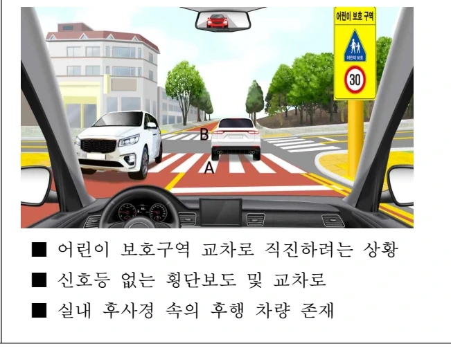

841. Hai cách điều khiển xe lưu thông một cách an toàn trong khu vực bảo vệ trẻ em là gì?

- ①Đi chậm theo xe phía trước và đi qua vạch sang đường A.
- ②Duy trì tốc độ và đi theo xe phía trước để tránh va chạm với xe phía sau.
- ③Tạm dừng trước vạch dừng của vạch sang đường A rồi đi qua.
- ④Vì không có người đi bộ trên vạch sang đường B nên đi chậm qua.
- ⑤Tạm dừng ở trước vạch sang đường B rồi đi qua.
Xem đáp án
Đáp án
③ Tạm dừng trước vạch dừng của vạch sang đường A rồi đi qua.
⑤ Tạm dừng ở trước vạch sang đường B rồi đi qua.
Căn cứ
Điều 27, khoản 7 Luật Giao thông đường bộ. Người điều khiển ô tô hoặc xe điện phải tạm thời dừng trước lối qua đường dành cho người đi bộ mà không có tín hiệu (nếu có vạch dừng, điều này ám chỉ vạch dừng) trong số các lối qua đường dành cho người đi bộ trong khu vực bảo vệ trẻ em theo Điều 12 (1) của cùng một Đạo luật, bất kể người đi bộ có băng qua hay không.
Phần căn cứ là bản dịch máy để tham khảo.